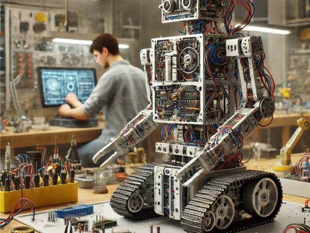

Aoi
self-introduction
2021年に大阪公大高専に入学。
現在メカトロニクスコース4年生です。 ろぼっと倶楽部に所属し、機械班＆会計として高専ロボコン全国優勝を目指しました。Works
2022年: 自律走行ロボットの設計製作
3年次に「自律走行ロボットの開発プロジェクト」に取り組みました。
具体的には超音波センサ（検知範囲:5-100cm）を用いた障害物回避システムを搭載した「キャタピラ型走行ロボット」をクラスメイト4名とチームを組んで、要件定義から完成まで約16週間かけて取り組みました。自分は、Fusion 360（3次元CAD）を用いた機械設計を担当し、シャーシやマウント類など計127個の部品を設計しました（加工も共同で担当しました）。また、制御系の補助として、Arduino で動かす自律制御プログラムの実装とテスト、調整も担当しました。。


Skills
授業やクラブ活動、文化祭活動、趣味を含めて利用経験のあるハードウェアやソフトウェアの一覧です。習熟度の目安として累積使用時間が10時間以上のものを「★」、30時間以上を「★★」、100時間以上を「★★★」と表記しています。
- Fusion 360（3D-CAD）
- 汎用旋盤
- ボール盤
- フライス盤
- Arduino
- 電子工作（ブレッドボード）
- Python